Introduction
Staff population
The HESA Staff Record covers all academic and non-academic staff who have a contract of employment with a higher education institution (HEI) in the UK, or for whom the HEI is liable to pay Class 1 National Insurance contributions. Other staff, such as those employed under consultancy contracts, or on the basis of payment of fees for services but without a contract of employment, are not included in the record.
The staff return covers data supplied by 162 HEIs; one of the English HEIs, The University of Buckingham, is a non-publicly-funded institution voluntarily providing data to HESA. The number of Welsh institutions in this publication is different from the number reported in some other HESA products because of the inclusion of staff data from The University of Wales (central functions).
In 2012/13 (that is, on 1 December 2012) there were in total, excluding atypical, 382,515 staff (378,250 in 2011/12) in the HE sector, of whom 254,490 were full-time staff (248,125 in 2011/12) and 128,025 part-time staff (130,125 in 2011/12). In addition, there were 74,075 academic atypical staff. Throughout this introduction, unless otherwise stated, staff numbers exclude atypical staff. Reporting of atypical staff was changed for the 2012/13 collection with institutions only obliged to return atypical staff on academic contracts, therefore this publication excludes non-academic atypical staff.
All figures provided in the introduction tables and text are based on full-person equivalents (FPE; headcounts) rather than full-time equivalents (FTE; weighted by proportion relative to full-time). Where data has been disaggregated by contract characteristics, such as activity, the FPE figures have been apportioned across the contract(s) held by the staff member.
The total number of academic staff in 2012/13 was 185,585 (181,385 in 2011/12), an increase of 2.3% between 2011/12 and 2012/13. Of the academic staff, 122,500 (66.0%) were full-time and 63,085 (34.0%) were part-time.
Academic contracts made up almost half (48.1%) of the full-time staff population. Of the non-academic contracts the largest group was administrative and secretarial occupations with 16.1% of the full-time staff population followed by associate professional and technical occupations which made up 13.1% of the full-time staff population. Among part-time staff, 49.3% were academic professionals.
Table A shows the overall pattern of staffing in UK HEIs, including academic atypical staff. Chart 1 below illustrates the distribution of all full-time staff, excluding atypical, by activity (sourced from Table A).
Key for Charts 1, 2 and 3 below:
| A | Academic contract |
| B | Non-academic contract - Managers, directors and senior officials |
| C | Non-academic contract - Professional occupations |
| D | Non-academic contract - Associate professional and technical occupations |
| E | Administrative and secretarial occupations |
| F | Skilled trades occupations |
| G | Caring, leisure and other service occupations |
| H | Sales and customer service occupations |
| I | Process, plant and machine operatives |
| J | Elementary occupations |
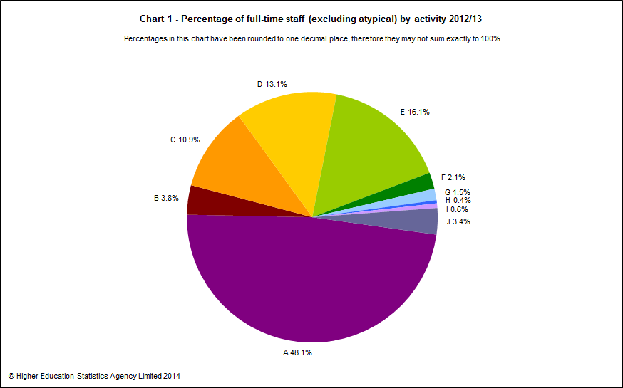
Mode of employment and sex
Overall, females made up 53.9% of the staff population and 46.6% of the academic atypical staff population. Almost half (47.1%) of all full-time staff and nearly two-thirds (67.3%) of all part-time staff were female.
For academic staff, the overall proportion of females was lower at 44.5%. This was also the case for full-time and part-time academic staff of whom 39.3% and 54.7% were female.
Chart 2 below provides the sex proportions by activity of full-time staff (sourced from Table A).
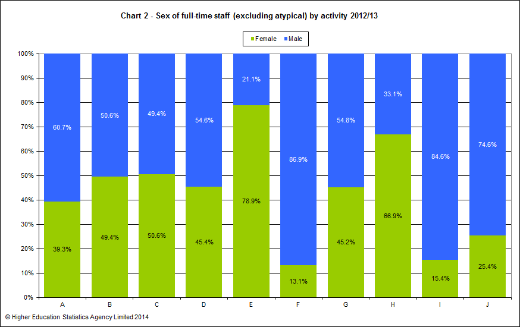Chart 3 provides equivalent data to Chart 2, but for part-time staff (sourced from Table A).
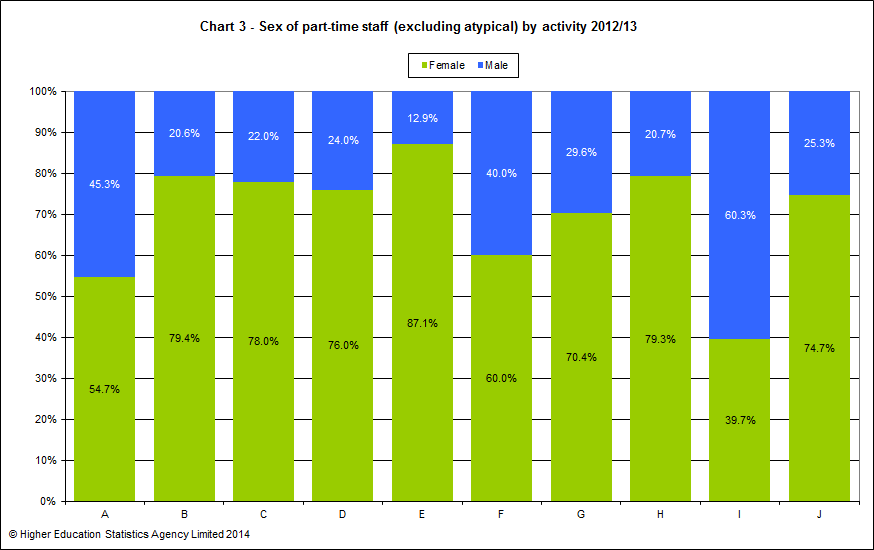Across all activities, there were higher proportions of female part-time staff than male part-time staff, except amongst process, plant and machine operatives for which there were 39.7% females compared to 60.3% males.
Table B and Table C respectively provide a breakdown of academic and non-academic staffing in HE. Atypicals have been excluded from these tables as the majority of the data is not collected for atypical staff.
Chart 4 below provides the proportions of full-time and part-time academic staff by academic employment function (sourced from Table B).
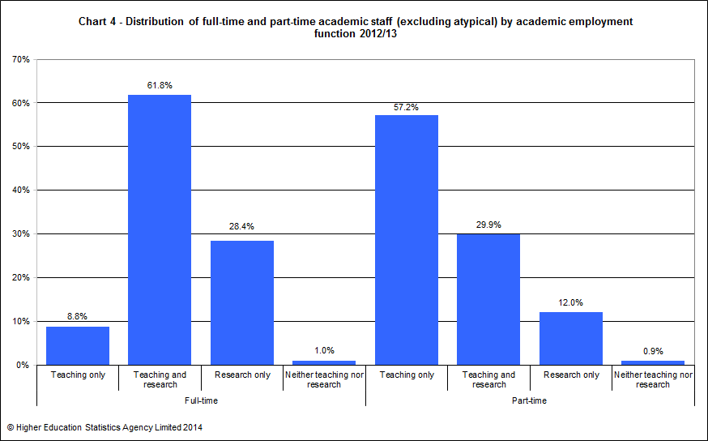Of the 185,585 academic staff employed by UK HEIs, 122,500, or 66.0% were in full-time employment. Most full-time staff were in teaching and research (61.8%) whereas part-time staff had a majority in teaching only (57.2%).
Salary
Among full-time academic staff, 39.4% had contract salaries between £42,055 and £56,467. For part-time academic staff, 46.1% had contract salaries between £31,331 and £42,055. It is worth clarifying here that salaries for part-time staff are not reported to HESA as pro-rata amounts but as salaries scaled up to full-time equivalent rates.
Chart 5 below illustrates the distribution of female and male full-time academic staff by salary range (sourced from Table B). Higher proportions of male full-time academic staff (25.7%) had contract salaries of £56,467 or over than female full-time academic staff (13.2%).
The salary ranges have been defined with reference to the nationally negotiated pay spine for non-clinical staff.
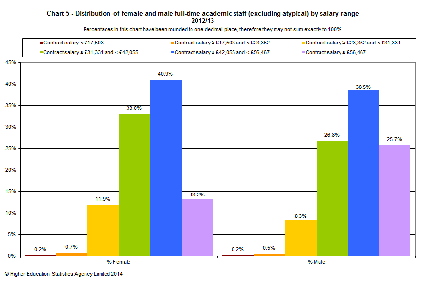The total number of non-academic staff employed by UK HEIs was 196,935. Of these, 131,990 or 67.0% were in full-time employment.
Just over half, 53.6%, of full-time non-academic posts were managerial, professional and technical. Of the non-academic part-time staff, 29.8% were in managerial, professional and technical posts.
Chart 6 below provides the proportions of staff within each activity group by contract salary range (sourced from Table B and Table C).
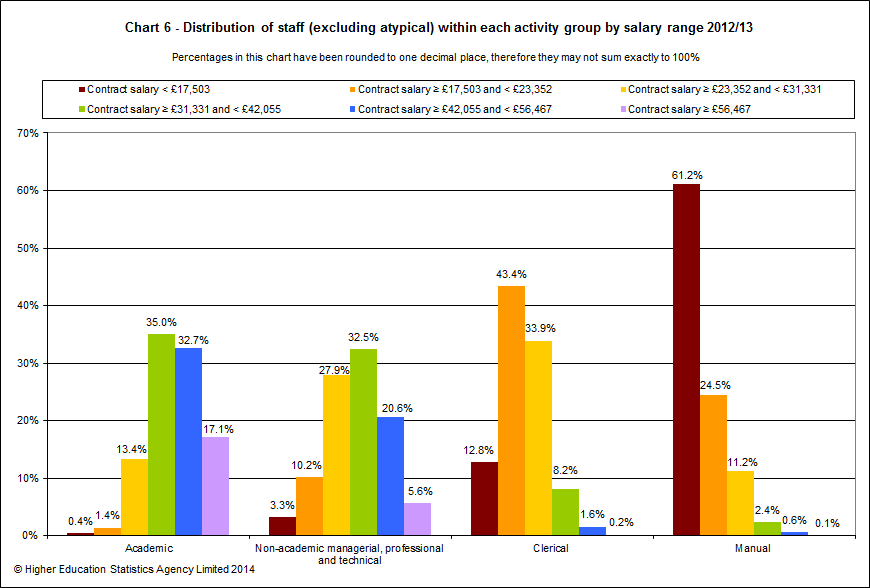Higher proportions of academic staff had contract salaries in the top three salary ranges than staff in the other activity groups. Similar proportions of academic staff (35.0%) and non-academic managerial, professional & technical staff (32.5%) had contract salaries between £31,331 and £42,055. Nearly two-thirds (61.2%) of manual staff had contract salaries less than £17,503. Almost half (43.4%) of clerical staff had contract salaries between £17,503 and £23,352.
Inflow/outflow of academic staff
Table D provides details of the inflow and outflow of academic staff during the year based on headcount numbers (rather than full-person-equivalent headcount used in all other contexts) to give an indication of the number of staff who take up and leave academic posts at HEIs. For the purpose of this table only, full-time academic staff are those members who spend at least 50% of their time engaged in full-time academic contracts. Similarly, part-time academic staff are those members who spend at least 50% of their time engaged in part-time academic contracts.
This results in academic staff numbers that are slightly different from those given in Tables B and C. Data given in Table D also differs from that given in the main tables 20-22 which are based on staff contracts rather than headcount.
Table D involves linkage between the staff records for 2011/12 and 2012/13. Staff inflow counts the number of full-time or part-time academic staff as at 1 December 2012 who were not identified as being at a UK HEI on 1 December 2011. Staff outflow counts the number of full-time or part-time academic staff as at 1 December 2011 who were not identified as being at a UK HEI on 1 December 2012. Staff inflow and outflow numbers have been broken down by previous employment and leaving destination respectively. High proportions of unknowns, particularly amongst the leaving destination, mean that caution must be exercised when analysing this data.
The (headcount) number of full-time academic staff has increased from 118,125 to 122,720 during the year, an increase of 3.9%. The number of part-time academic staff decreased from 64,550 to 63,900 (1.0%) during the year.
The inflow of staff into full-time academic posts was lower (6,525 staff; 5.3%) than the inflow into part-time academic posts (7,460 staff; 11.7%). The outflow of staff from full-time academic posts was higher (6,555 staff; 5.5%) than the inflow. This was not the case for part-time staff for which the outflow was lower (6,330 staff; 9.8%) than the inflow.
Age of academic staff
Table E presents the age distribution of full-time academic staff by salary range.
Of those staff whose age was known, 42.4% were aged over 45 and 12.8% were aged between 51 and 55.
The average age of full-time academic staff was 43.2 and of part-time staff, 45.8 (sourced from Table 3a). The average age of academic atypical staff was 40.7 (sourced from Table 3b).
Chart 7 provides the proportions of full-time academic staff by contract salary and age (sourced from Table E).
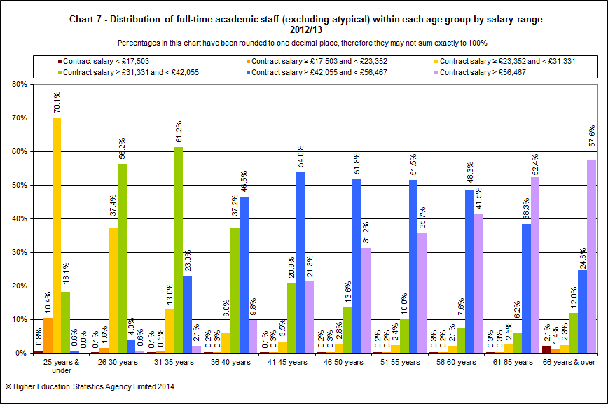In the 25 and under age group, 70.1% of full-time academic staff earned a contract salary between £23,352 and £31,331 whereas the majority (61.2%) of the 31–35 age group earned a salary between £31,331 and £42,055. In the 46–50 age group, the majority (51.8%) of full-time academic staff earned a salary between £42,055 and £56,467. In the top two age groups, 61–65 years and 66 years & over, 52.4% and 57.6% respectively earned a contract salary of £56,467 or more.
Ethnicity of all staff
In Table F ethnicity is shown broken down by activity standard occupational classification group and mode of employment. The ethnicity data within this introduction refers to staff of all nationalities.
Of all full-time and part-time staff, 93.4% reported their ethnicity. The response rate did not vary greatly by activity group and mode of employment. Among staff of known ethnicity, the proportion from ethnic minority groups varied, with greater representation among academic staff at 12.8% than among non-academic staff at 10.2%.
Ethnicity was reported for over two-thirds (72.8%) of academic atypical staff. Of those academic atypical staff of known ethnicity, 15.5% were from ethnic minority groups.
Table G provides the ethnic breakdown of staff by activity standard occupational classification group for all staff, including atypical. The chart series 8 below illustrate the data from Table G in pie chart format for all staff, excluding atypical.
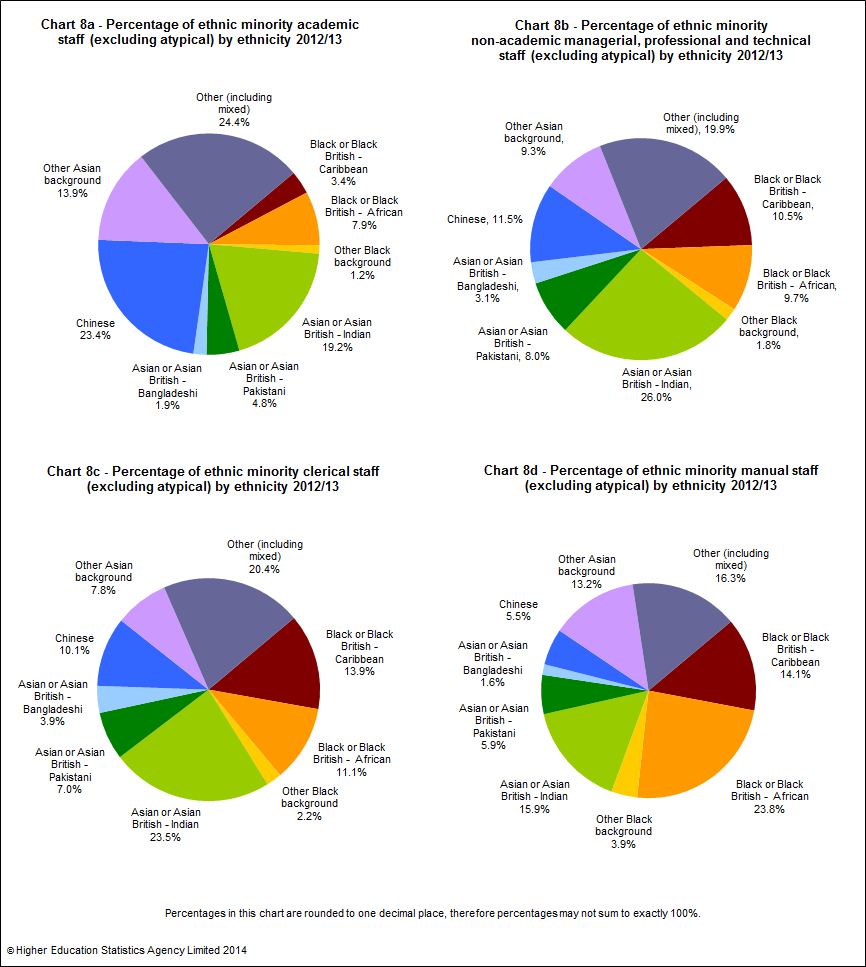Disability of all staff
Table H presents information on disability by activity standard occupational classification group and mode of employment for all staff, in a similar style to Table F.
Disability status was reported for 96.7% of all staff. Of those of known disability status, 4.1% declared a disability. For academic staff, the percentages were 96.6% reported and 3.5% declared disabled. For academic atypical staff the percentages were 91.3% reported and 1.9% declared disabled.
Table I provides a disability breakdown, based on the staff members’ own assessment, by activity standard occupational classification group. The chart series 9 below illustrate the data from Table I in pie chart format for all staff, excluding atypical.
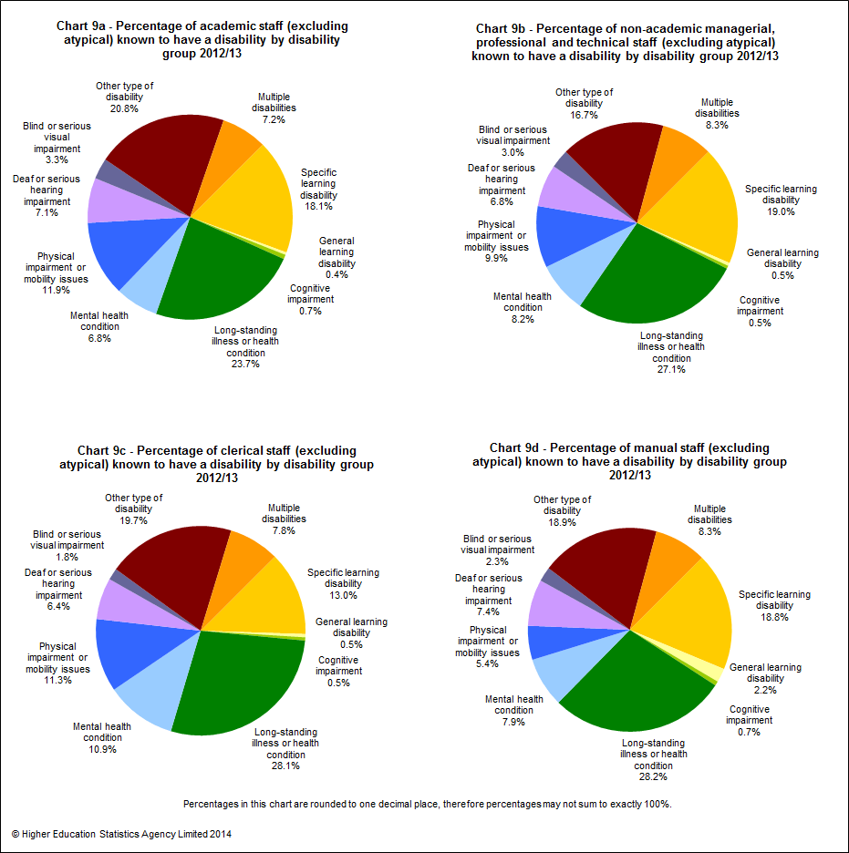Funding, contract levels and sex of full-time academic staff
Table J provides data on full-time academic staff by clinical status, contract level, sex and source of basic salary. Of all full-time academic posts, 72.3% were wholly financed by the institutions themselves.
The proportion of women among full-time clinical academic staff professors was 17.5% and among non-clinical academic staff professors was 21.9%. Of those staff who were not professors, 43.0% of full-time clinical academic staff were female and 41.7% of non-clinical academic staff were female.
44.6% of full-time clinical academic staff were wholly institutionally financed compared with 73.7% of non-clinical full-time academic staff. This reflects the greater prevalence of joint funding arrangements for clinical staff such as joint contracts involving the NHS.
Of all full-time clinical academic staff, 24.1% were professors compared with 11.5% of non-clinical full-time academic staff.
Cost centre distribution of full-time academic staff
The data in Table K provides a breakdown of full-time academic staff by cost centre group, source of basic salary and sex.
Overall, 27.7% of full-time academic staff were not wholly institutionally financed. Just under half (45.2%) of full-time academic staff in medicine, dentistry & health and 44.0% in biological, mathematical & physical sciences were not wholly institutionally financed. Cost centre groups with the lowest percentage of partially or wholly externally funded full-time academic staff were in the areas of design, creative & performing arts 2.9% and administrative & business studies 4.8%.
Chart 10 below provides the sex proportions by cost centre of full-time staff (sourced from Table K). Over a third (34.8%) of female full-time academic staff were employed within medicine, dentistry & health cost centre compared to around a fifth (20.1%) of males. In contrast, over three times the proportion of males (18.6%) than females (6.0%) were employed in the engineering & technology cost centre.
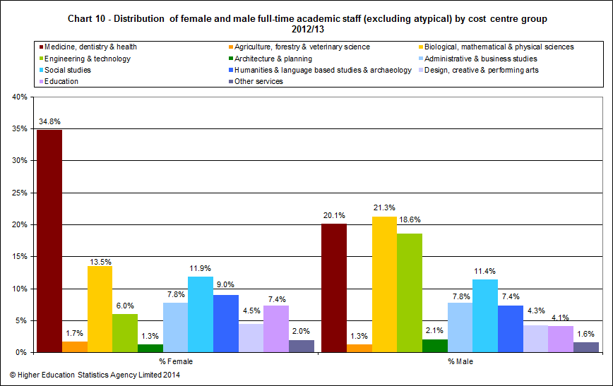Pattern of employment of academic staff
Table L shows academic staff by academic employment function, sex, mode of employment and terms of employment.
Among staff who only had teaching responsibilities, the majority of full-time staff were on open-ended/permanent contracts, 77.4% female and 79.8% male, whereas the majority of part-time staff were on fixed-term contracts, 65.8% female and 69.7% male. Of the staff with teaching and research responsibilities, more than 93.6% of full-time staff were on open ended/permanent staff contracts. The opposite was true of research only staff, who had a high proportion of fixed-term contracts in both full-time, 68.4% female and 67.1% male, and in part-time, 62.5% female and 70.2% male.
Chart 11 below illustrates the proportions of open-ended/permanent and fixed-term contract academic staff by mode of employment and sex.
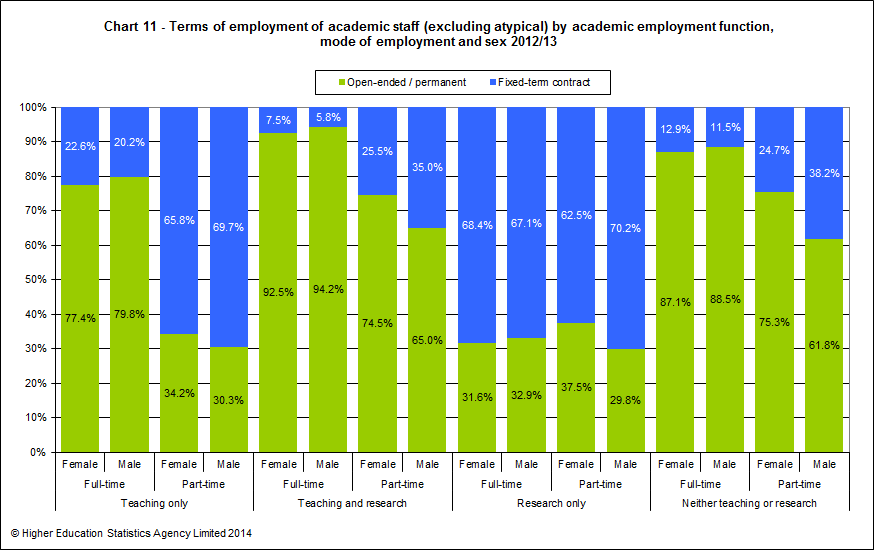© Higher Education Statistics Agency Limited 2014